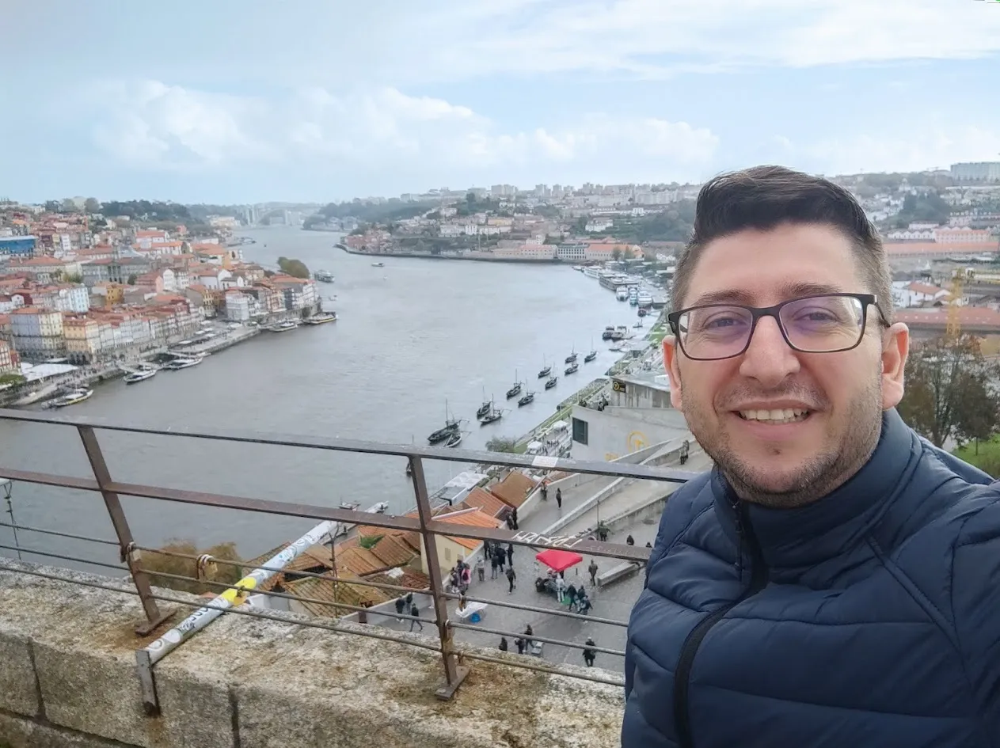

About Me
I’m Marcelo Duarte from Brazil, currently, I live in Guimarães Portugal. I’m married and I have two daughters. I love to spend time with my family doing things such as to know new places, playing drums, riding a bike, and watching series and movies
The Castle of Guimarães (Portuguese: Castelo de Guimarães) is the principal medieval castle in the municipality Guimarães, in the northern region of Portugal. It was built under the orders of Mumadona Dias in the 10th century to defend the monastery from attacks by Moors and Norsemen. The castle is located within the northern limits of the urban area of Guimarães, isolated on a small hill formed from granite, and encircled by a small forest park, accessed by several pedestrian trails. Alongside the southern tower is a bronze medallion of D. Afonso Henriques, over a large rock. More ...